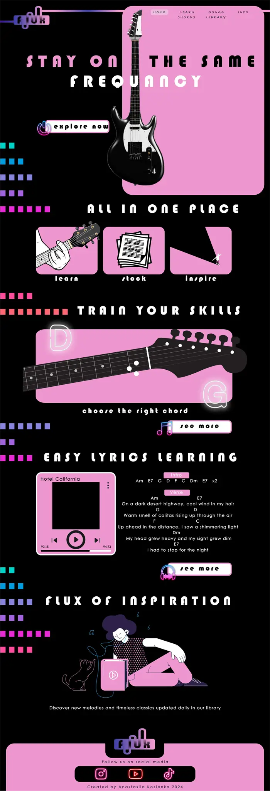
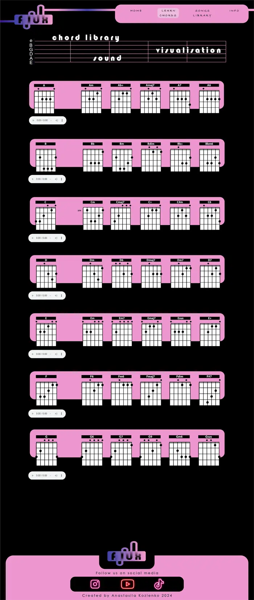
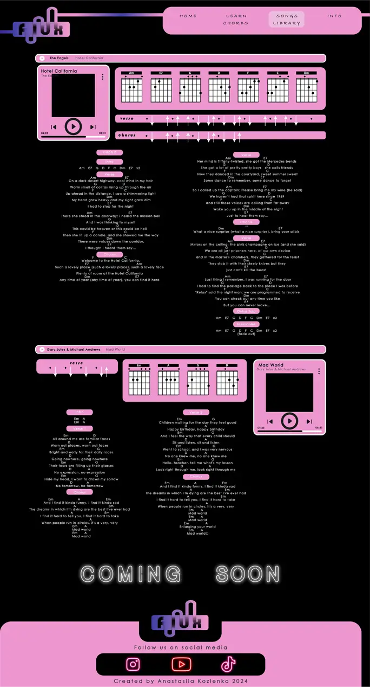
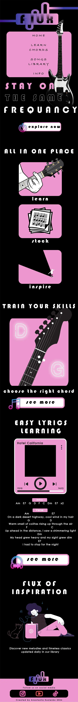

WHY FLUX?
My website, Flux, is like my personal song library, where I store chords and lyrics of my favorite songs
that I learn and sing on my guitar. I've been playing guitar for a year now,
and it's something I really enjoy. I used to jot down chords and lyrics in a notebook,
but I had the idea to digitize this process.
The design of Flux was clear in my mind from the start. As an Informatics student with few creative projects,
I wanted to fully immerse myself in this one. I decided to create the layout in Illustrator,
ensuring a diverse mobile version for the homepage. I'm thrilled with how it turned out,
just as I envisioned, even if it meant dealing with 1000 lines of CSS :D
LAYOUT
-
Home page
 -
Chords page
 -
Songs page
 -
Home mobile

THANK YOU
P.S: your course is cool :3